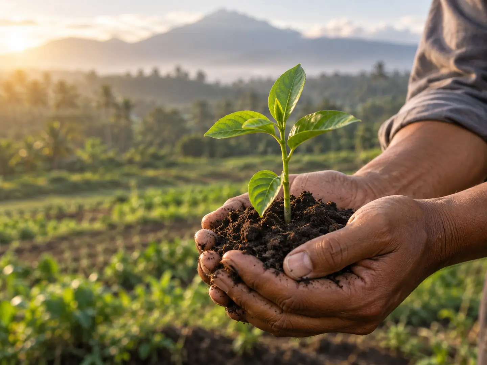

People
Recognising the knowledge, care, and skill behind every product.
People · Products · Global Impact
Royal Grace Global was created around a simple conviction: Indonesia’s finest products deserve thoughtful pathways to the world.
We bring together natural richness, skilled hands, and international opportunity. Our role is to connect those strengths with partners who share our respect for quality, transparency, and enduring value.
Every product journey links a place, a person, and a possibility. We work to make those links stronger.
Recognising the knowledge, care, and skill behind every product.
Presenting distinctive Indonesian quality with clarity and purpose.
Building relationships through openness, respect, and mutual ambition.
Creating value that can travel across markets and return to communities.
Across Indonesia, distinct landscapes and communities shape products with remarkable identity. From aromatic crops nurtured by tropical soil to beauty craft refined by precise hands, provenance is part of the value.
We honour that origin by representing it with care—and by helping global partners understand what makes it special.
Explore our productsWe pay attention to product character, consistency, and the details that matter in market.
We communicate clearly, set realistic expectations, and follow through with care.
We value the growers, makers, teams, and partners who make each journey possible.
We favour decisions that support enduring value over short-term advantage.
For Royal Grace Global, responsible growth is an ongoing practice: respect the source, strengthen relationships, reduce avoidable waste, and keep learning with every partnership.
Protect the character and context that give products their value.
Choose practical improvements that can endure as trade expands.
Seek partnerships where progress is meaningful on both sides.

Progress means creating value today without losing sight of tomorrow.